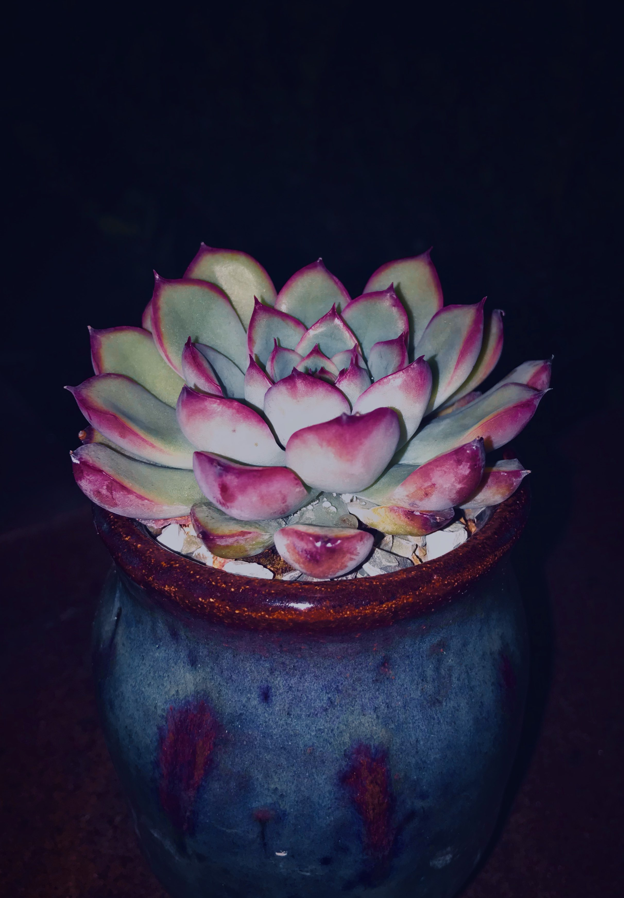

Pots

There are a variety of pot shapes that succulent plants can use to fit in.
The right pot needs to be used for the succulent plant to fit and effectively take up the water in the soil.
- Terracotta: breathable, promotes good water drainage and air circulation. Heavy and difficult to transport.
- Ceramic: breathable, promotes good water drainage and air circulation. Heavy and difficult to transport.
- Metal: Good for short-term, temporary potting. Gains heat too quickly and temperatures in soil fluctuates easily. Not good for long term plotting.
- Resin: good for big plants, lighter to carry and transport.
- Plastic: good for big plants, lighter to carry and transport.